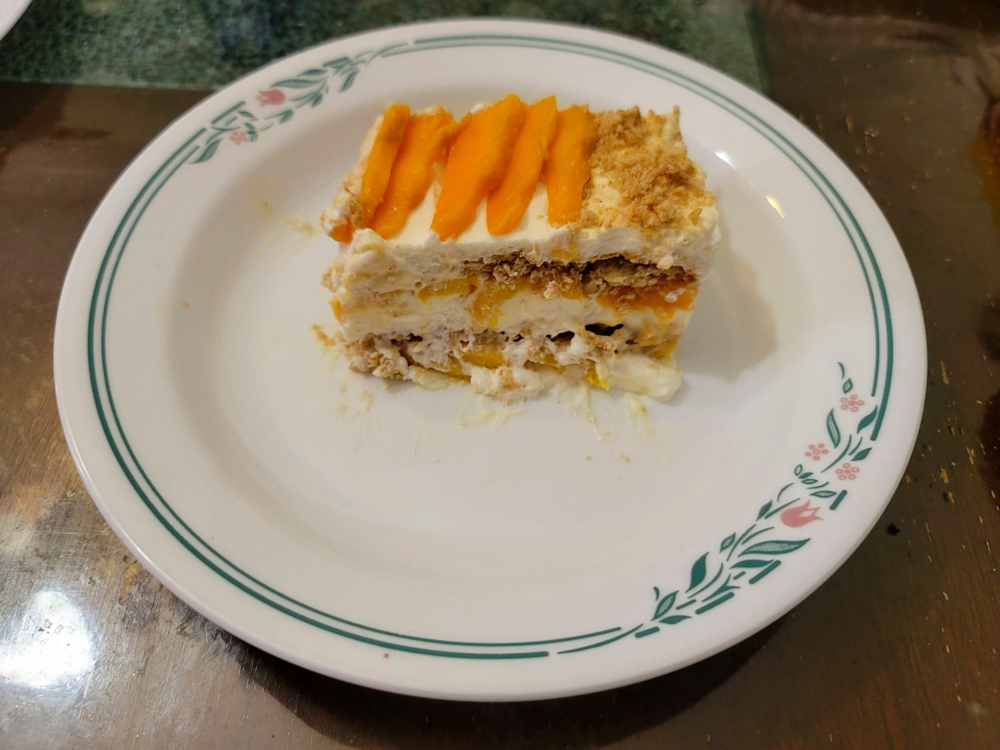

Mango Float

Ingredients:
- 5-6 Mangoes, sliced
- 2 cups Heavy cream
- 1/2 cup (150 g) Condensed milk
- 1/2 tsp Vanilla extract
- 200~ g Graham crackers
Instructions:
- Use an electric mixer to whip the heavy cream to soft peaks. Then add in the condensed milk and vanilla extract and continue to whip the cream to stiff peaks. Reserve.
- To an 8x8" glass baking dish, add a layer of graham crackers. Then add a layer of 1/3 of the whipped cream. Then a layer of mangoes. Repeat for 2 more layers.
- Place in a fridge to set overnight. Serve chilled the following day.